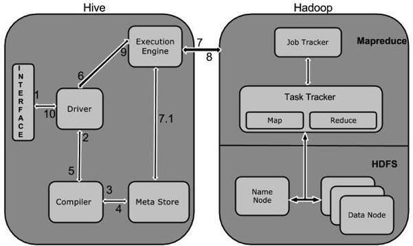
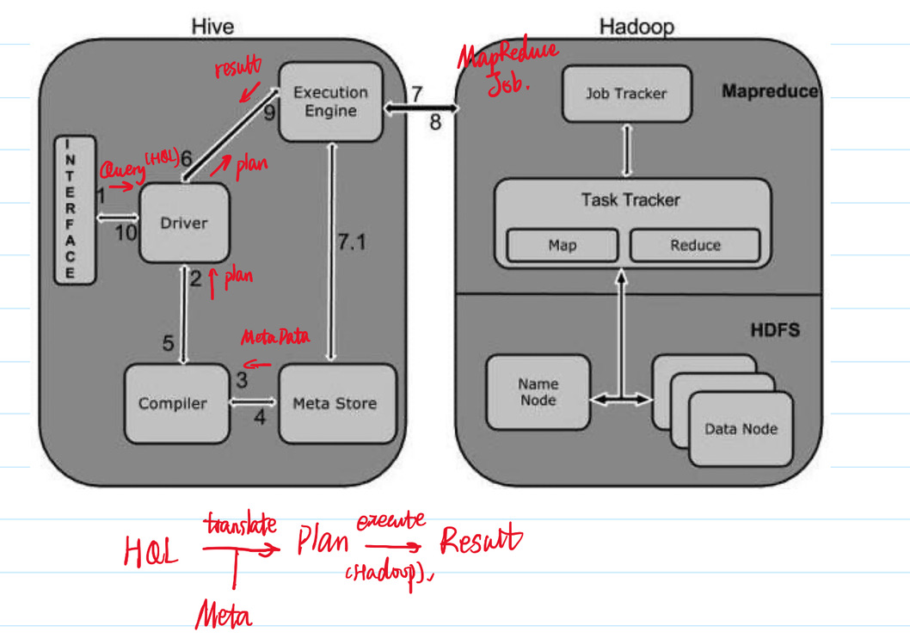

Introduction to Hive
Overview
The term ‘Big Data’ is used for collections of large datasets that include huge volume, high velocity, and a variety of data that is increasing day by day. Using traditional data management systems, it is difficult to process Big Data. Therefore, the Apache Software Foundation introduced a framework called Hadoop to solve Big Data management and processing challenges.
Hadoop
Hadoop is an open-source framework to store and process Big Data in a distributed environment. It contains two modules, one is MapReduce and another is Hadoop Distributed File System (HDFS).
- MapReduce: It is a parallel programming model for processing large amounts of structured, semi-structured, and unstructured data on large clusters of commodity hardware.
- HDFS: Hadoop Distributed File System is a part of Hadoop framework, used to store and process the datasets. It provides a fault-tolerant file system to run on commodity hardware.
The Hadoop ecosystem contains different sub-projects (tools) such as Sqoop, Pig, and Hive that are used to help Hadoop modules.
- Sqoop: It is used to import and export data to and from between HDFS and RDBMS.
- Pig: It is a procedural language platform used to develop a script for MapReduce operations.
- Hive: It is a platform used to develop SQL type scripts to do MapReduce operations.
Note: There are various ways to execute MapReduce operations:
- The traditional approach using Java MapReduce program for structured, semi-structured, and unstructured data.
- The scripting approach for MapReduce to process structured and semi structured data using Pig.
- The Hive Query Language (HiveQL or HQL) for MapReduce to process structured data using Hive.
What is Hive
Hive is a data warehouse infrastructure tool to process structured data in Hadoop. It resides on top of Hadoop to summarize Big Data, and makes querying and analyzing easy.
Hive is not
- A relational database
- A design for OnLine Transaction Processing (OLTP)
- A language for real-time queries and row-level updates
Features of Hive
- It stores schema in a database and processed data into HDFS.
- It is designed for OLAP (OnLine Analytical Processing)
- It provides SQL type language for querying called HiveQL or HQL.
- It is familiar, fast, scalable, and extensible.
Architecture of Hive
The following component diagram depicts the architecture of Hive:

This component diagram contains different units. The following table describes each unit:
| Unit Name | Operation |
|---|---|
| User Interface | Hive is a data warehouse infrastructure software that can create interaction between user and HDFS. The user interfaces that Hive supports are Hive Web UI, Hive command line, and Hive HD Insight (In Windows server). |
| Meta Store | Hive chooses respective database servers to store the schema or Metadata of tables, databases, columns in a table, their data types, and HDFS mapping. |
| HiveQL Process Engine | HiveQL is similar to SQL for querying on schema info on the Metastore. It is one of the replacements of traditional approach for MapReduce program. Instead of writing MapReduce program in Java, we can write a query for MapReduce job and process it. |
| Execution Engine | The conjunction part of HiveQL process Engine and MapReduce is Hive Execution Engine. Execution engine processes the query and generates results as same as MapReduce results. It uses the flavor of MapReduce. |
| HDFS or HBASE | Hadoop distributed file system or HBASE are the data storage techniques to store data into file system. |
Working of Hive
The following diagram depicts the workflow between Hive and Hadoop.

The following table defines how Hive interacts with Hadoop framework:
| Step No. | Operation |
|---|---|
| 1 | Execute Query The Hive interface such as Command Line or Web UI sends query to Driver (any database driver such as JDBC, ODBC, etc.) to execute. |
| 2 | Get Plan The driver takes the help of query compiler that parses the query to check the syntax and query plan or the requirement of query. |
| 3 | Get Metadata The compiler sends metadata request to Metastore (any database). |
| 4 | Send Metadata Metastore sends metadata as a response to the compiler. |
| 5 | Send Plan The compiler checks the requirement and resends the plan to the driver. Up to here, the parsing and compiling of a query is complete. |
| 6 | Execute Plan The driver sends the execute plan to the execution engine. |
| 7 | Execute Job Internally, the process of execution job is a MapReduce job. The execution engine sends the job to JobTracker, which is in Name node and it assigns this job to TaskTracker, which is in Data node. Here, the query executes MapReduce job. |
| 7.1 | Metadata Ops Meanwhile in execution, the execution engine can execute metadata operations with Metastore. |
| 8 | Fetch Result The execution engine receives the results from Data nodes. |
| 9 | Send Results The execution engine sends those resultant values to the driver. |
| 10 | Send Results The driver sends the results to Hive Interfaces. |
Below is an annotated summary

Data Type
This chapter takes you through the different data types in Hive, which are involved in the table creation. All the data types in Hive are classified into four types, given as follows:
- Column Types
- Literals
- Null Values
- Complex Types
Column Types
Integer Types
Integer type data can be specified using integral data types, INT. When the data range exceeds the range of INT, you need to use BIGINT and if the data range is smaller than the INT, you use SMALLINT. TINYINT is smaller than SMALLINT.
The following table depicts various INT data types:
| Type | Postfix | Example |
|---|---|---|
| TINYINT | Y | 10Y |
| SMALLINT | S | 10S |
| INT | - | 10 |
| BIGINT | L | 10L |
String Types
String type data types can be specified using single quotes (‘ ‘) or double quotes (“ “). It contains two data types: VARCHAR and CHAR. Hive follows C-types escape characters.
The following table depicts various CHAR data types:
| Data Type | Length |
|---|---|
| VARCHAR | 1 to 65355 |
| CHAR | 255 |
Timestamp
It supports traditional UNIX timestamp with optional nanosecond precision. It supports java.sql.Timestamp format “YYYY-MM-DD HH:MM:SS.fffffffff” and format “yyyy-mm-dd hh:mm:ss.ffffffffff”.
Dates
DATE values are described in year/month/day format in the form NaN.
Decimals
The DECIMAL type in Hive is as same as Big Decimal format of Java. It is used for representing immutable arbitrary precision. The syntax and example is as follows:
1 | |
Union Types
Union is a collection of heterogeneous data types. You can create an instance using create union.
1 | |
Literals
Floating Point Types
Floating point types are nothing but numbers with decimal points. Generally, this type of data is composed of DOUBLE data type.
Decimal Type
Decimal type data is nothing but floating point value with higher range than DOUBLE data type. The range of decimal type is approximately -10-308 to 10308.
Null Value
Missing values are represented by the special value NULL.
Complex Types
The Hive complex data types are as follows:
Arrays
Arrays in Hive are used the same way they are used in Java.
1 | |
Maps
Maps in Hive are similar to Java Maps.
1 | |
Structs
Structs in Hive is similar to using complex data with comment.
1 | |
Database Operations
Create Database
Create Database is a statement used to create a database in Hive. A database in Hive is a namespace or a collection of tables. The syntax for this statement is as follows:
1 | |
Here, IF NOT EXISTS is an optional clause, which notifies the user that a database with the same name already exists. We can use SCHEMA in place of DATABASE in this command. The following query is executed to create a database named userdb:
1 | |
or
1 | |
The following query is used to verify a databases list:
1 | |
Drop Database
Drop Database is a statement that drops all the tables and deletes the database. Its syntax is as follows:
1 | |
The following queries are used to drop a database. Let us assume that the database name is userdb.
1 | |
The following query drops the database using CASCADE. It means dropping respective tables before dropping the database.
1 | |
The following query drops the database using SCHEMA.
1 | |
Table Operations
Create Table
Create Table is a statement used to create a table in Hive. The syntax and example are as follows:
Syntax
1 | |
Example
The following query creates a table named employee using the above data.
1 | |
Load Data Statement
Generally, after creating a table in SQL, we can insert data using the Insert statement. But in Hive, we can insert data using the LOAD DATA statement.
While inserting data into Hive, it is better to use LOAD DATA to store bulk records. There are two ways to load data: one is from local file system and second is from Hadoop file system.
Syntax
The syntax for load data is as follows:
1 | |
LOCALis identifier to specify the local path. It is optional.OVERWRITEis optional to overwrite the data in the table.PARTITIONis optional.
Example
We will insert the following data into the table. It is a text file named sample.txt in /home/user directory.
1 | |
The following query loads the given text into the table.
1 | |
ALTER Table
Syntax
The statement takes any of the following syntaxes based on what attributes we wish to modify in a table.
1 | |
DROP Table
When you drop a table from Hive Metastore, it removes the table/column data and their metadata. It can be a normal table (stored in Metastore) or an external table (stored in local file system); Hive treats both in the same manner, irrespective of their types.
The syntax is as follows:
1 | |
The following query drops a table named employee:
1 | |
Partitions
Hive organizes tables into partitions. It is a way of dividing a table into related parts based on the values of partitioned columns such as date, city, and department. Using partition, it is easy to query a portion of the data.
Tables or partitions are sub-divided into buckets, to provide extra structure to the data that may be used for more efficient querying. Bucketing works based on the value of hash function of some column of a table.
For example, a table named Tab1 contains employee data such as id, name, dept, and yoj (i.e., year of joining). Suppose you need to retrieve the details of all employees who joined in 2012. A query searches the whole table for the required information. However, if you partition the employee data with the year and store it in a separate file, it reduces the query processing time. The following example shows how to partition a file and its data:
The following file contains employeedata table.
/tab1/employeedata/file1
1 | |
The above data is partitioned into two files using year.
/tab1/employeedata/2012/file2
1 | |
/tab1/employeedata/2013/file3
1 | |
Adding a Partition
Syntax:
1 | |
The following query is used to add a partition to the employee table.
1 | |
Renaming a Partition
The syntax of this command is as follows.
1 | |
The following query is used to rename a partition:
1 | |
Dropping a Partition
The following syntax is used to drop a partition:
1 | |
The following query is used to drop a partition:
1 | |
Operators & Functions
Relational Operators
These operators are used to compare two operands. The following table describes the relational operators available in Hive:
| Operator | Operand | Description |
|---|---|---|
| A = B | all primitive types | TRUE if expression A is equivalent to expression B otherwise FALSE. |
| A != B | all primitive types | TRUE if expression A is not equivalent to expression B otherwise FALSE. |
| A < B | all primitive types | TRUE if expression A is less than expression B otherwise FALSE. |
| A <= B | all primitive types | TRUE if expression A is less than or equal to expression B otherwise FALSE. |
| A > B | all primitive types | TRUE if expression A is greater than expression B otherwise FALSE. |
| A >= B | all primitive types | TRUE if expression A is greater than or equal to expression B otherwise FALSE. |
| A IS NULL | all types | TRUE if expression A evaluates to NULL otherwise FALSE. |
| A IS NOT NULL | all types | FALSE if expression A evaluates to NULL otherwise TRUE. |
| A LIKE B | Strings | TRUE if string pattern A matches to B otherwise FALSE. |
| A RLIKE B | Strings | NULL if A or B is NULL, TRUE if any substring of A matches the Java regular expression B , otherwise FALSE. |
| A REGEXP B | Strings | Same as RLIKE. |
Logical Operators
The operators are logical expressions. All of them return either TRUE or FALSE.
| Operators | Operands | Description |
|---|---|---|
| A AND B | boolean | TRUE if both A and B are TRUE, otherwise FALSE. |
| A && B | boolean | Same as A AND B. |
| A OR B | boolean | TRUE if either A or B or both are TRUE, otherwise FALSE. |
| A || B | boolean | Same as A OR B. |
| NOT A | boolean | TRUE if A is FALSE, otherwise FALSE. |
| !A | boolean | Same as NOT A. |
Built-in Functions
Hive supports the following built-in functions:
| Return Type | Signature | Description |
|---|---|---|
| BIGINT | round(double a) | It returns the rounded BIGINT value of the double. |
| BIGINT | floor(double a) | It returns the maximum BIGINT value that is equal or less than the double. |
| BIGINT | ceil(double a) | It returns the minimum BIGINT value that is equal or greater than the double. |
| double | rand(), rand(int seed) | It returns a random number that changes from row to row. |
| string | concat(string A, string B,…) | It returns the string resulting from concatenating B after A. |
| string | substr(string A, int start) | It returns the substring of A starting from start position till the end of string A. |
| string | substr(string A, int start, int length) | It returns the substring of A starting from start position with the given length. |
| string | upper(string A) | It returns the string resulting from converting all characters of A to upper case. |
| string | ucase(string A) | Same as above. |
| string | lower(string A) | It returns the string resulting from converting all characters of B to lower case. |
| string | lcase(string A) | Same as above. |
| string | trim(string A) | It returns the string resulting from trimming spaces from both ends of A. |
| string | ltrim(string A) | It returns the string resulting from trimming spaces from the beginning (left hand side) of A. |
| string | rtrim(string A) | rtrim(string A) It returns the string resulting from trimming spaces from the end (right hand side) of A. |
| string | regexp_replace(string A, string B, string C) | It returns the string resulting from replacing all substrings in B that match the Java regular expression syntax with C. |
| int | size(Map<K.V>) | It returns the number of elements in the map type. |
| int | size(Array |
It returns the number of elements in the array type. |
| value of |
cast( |
It converts the results of the expression expr to |
| string | from_unixtime(int unixtime) | convert the number of seconds from Unix epoch (1970-01-01 00:00:00 UTC) to a string representing the timestamp of that moment in the current system time zone in the format of “1970-01-01 00:00:00” |
| string | to_date(string timestamp) | It returns the date part of a timestamp string: to_date(“1970-01-01 00:00:00”) = “1970-01-01” |
| int | year(string date) | It returns the year part of a date or a timestamp string: year(“1970-01-01 00:00:00”) = 1970, year(“1970-01-01”) = 1970 |
| int | month(string date) | It returns the month part of a date or a timestamp string: month(“1970-11-01 00:00:00”) = 11, month(“1970-11-01”) = 11 |
| int | day(string date) | It returns the day part of a date or a timestamp string: day(“1970-11-01 00:00:00”) = 1, day(“1970-11-01”) = 1 |
| string | get_json_object(string json_string, string path) | It extracts json object from a json string based on json path specified, and returns json string of the extracted json object. It returns NULL if the input json string is invalid. |
Aggregate Functions
Hive supports the following built-in aggregate functions. The usage of these functions is as same as the SQL aggregate functions.
| Return Type | Signature | Description |
|---|---|---|
| BIGINT | count(*), count(expr), | count(*) - Returns the total number of retrieved rows. |
| DOUBLE | sum(col), sum(DISTINCT col) | It returns the sum of the elements in the group or the sum of the distinct values of the column in the group. |
| DOUBLE | avg(col), avg(DISTINCT col) | It returns the average of the elements in the group or the average of the distinct values of the column in the group. |
| DOUBLE | min(col) | It returns the minimum value of the column in the group. |
| DOUBLE | max(col) | It returns the maximum value of the column in the group. |
Jinghong Chen @2021-2022